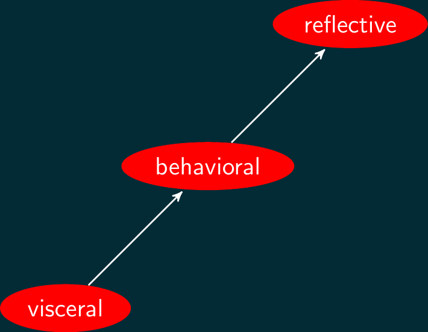

Human Computer Interaction:
Cognition
2024-02-01
Week THREE
Today
- Q and A from last time
- Cognition
- Readings
- Discussion leading (Ellis Brown)
- Design Critique (Brie Warren)
- Article Presentation (Mick McQuaid on Norman (2023), Section II)
- Figma tutorial (Rachel Sung)
Q and A from last time
AI and portfolio websites
- implications?
- useful?
- unethical?
- equitable?
Kahneman
Why can’t his experiments be replicated? Falsifying data? Unique sample? Changes in society, e.g., social media, computer, technology, cultural change?
Optical illusion
What is the meaning of the red Ys in the optical illusion image?
Limitations of humans
In the context of the limitations of humans, how to address any cultural and religious beliefs that have shaped individuals’ ethical frameworks?
Boundary between AI and Human Designers
UX designers work as a bridge of aesthetics, usability, and usefulness between software engineers and users, and set the whole design concept (UX Book). I’m getting more concerned on the boundary between human designers and AI.
Opinion on Attitudes
“I think people’s attitudes are beginning to move towards two extremes, with some people increasingly seeking inner peace and spiritual abundance, but the other group becoming more utilitarian.”
Reminds me of a NY Times article from this past weekend on intrinsic vs extrinsic values as explaining the Trump phenomenon. Intrinsincally motivated people are immune to Trump, but extrinsically motivated people value eveything about Trump, according to the article.
Opinion on Cognitive Ease
“I’m not sure I agree that the model of cognitive ease applies only to legacy applications. They apply to today’s social media apps as they still require a clear display in terms of design and familiarity, ease of use (for good mood), and in terms of experience. In my opinion, we are still designing with the same input and output feedback in mind.”
Cognition
We talked a bit about cognitive psychology last week, particularly about Tversky and Kahneman’s work. This week we continue with some historical information.
Human cognition and emotion, from Norman (2013) pp 49–55
Levels of emotional design
Visceral level
basic, similar in all people, recoil from hot stove; input is immediate present, output is an affective state; not emotions but precursors to emotions; dismissed by people who don’t believe they are influenced by it;
Behavioral level
learned skills, subconscious response to patterns; overall awareness but no conscious awareness of details, e.g., speaking, sports; conscious of goals while behavioral level handles details; actions are associated with expectations as well as outcomes and lead to affect, both before and after;
Reflective level
conscious cognition, deep understanding, reasoning, slow, guilt, pride, blame, admiration; design takes place at all three levels: high-level cognition can trigger low-level emotion just as low-level emotion can trigger high-level cognition;
Levels of human processing

More on levels of human processing
Another way to think of these levels is illustrated in the previous frame: hardwired or prewired, short-term, and abstract or contemplative. All three levels play a role in our reactions to our environment, including designed artifacts.
Model human processor
Baby bubblehead, aka model human processor
A model human processor schema from wikipedia

Keystroke level model
Keystroke level model includes
- operators, such as key presses, mouse pointing, choosing
- encoding, lists of operators and operands for calculating time
- heuristics, rules to apply to cognitive operators (e.g., choosing)
Keystroke model limitations
- error
- learning
- functionality
- recall
- concentration
- fatigue
- acceptability
GOMS
GOMS stands for
- Goals
- Operators (elementary actions)
- Methods (groups of operators)
- Selection rules (to choose methods)
protocol & verbal analysis
protocol analysis \(\rightarrow\) think-aloud process
Protocol analysis was an early hci tool
Verbal analysis differs in goals from protocol analysis
verbal analysis \(\rightarrow\) knowledge representation
Both analyses lead to maps
protocol analysis \(\rightarrow\) process map
verbal analysis \(\rightarrow\) knowledge map
Hick’s Law
Hick’s law predicts the time it will take for a user to make a choice, given the number of choices.
Hick’s law can be expressed as
\[t = b \log_2 (n + 1)\]
Fitts’s Law
Fitts’s law was actually discovered by Paul Fitts in the 1950s, but has been applied to the use of mice and other pointing devices as well as screen layouts since. It is perhaps the most widely invoked theory in the world of human computer interaction, and is depicted in the next frame.
Fitts’s law formulation
\[t = a + b \log_2\left(\frac{D}{W} + 1\right)\]
Readings
Readings last week include Johnson (2020): Ch 1–5
Readings this week include Johnson (2020): Ch 7–9, Norman (2013): Ch 2, 4
Let’s look at the Johnson book together, then the Norman book.
Assignment
Milestone 0: Topic Idea
Can one person from each group report on theirs?
References
END
Colophon
This slideshow was produced using quarto
Fonts are League Gothic and Lato